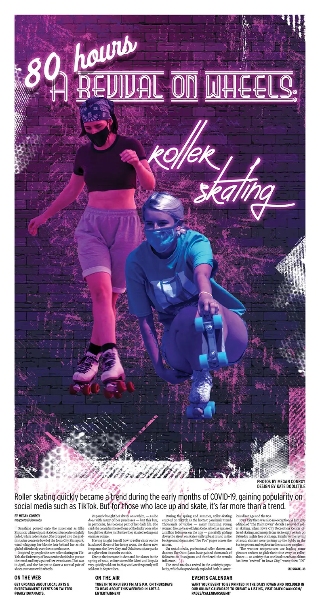
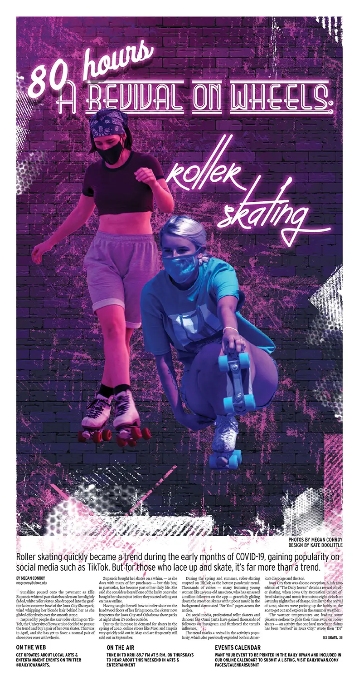
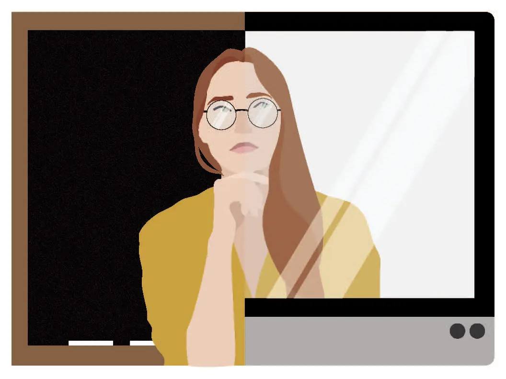
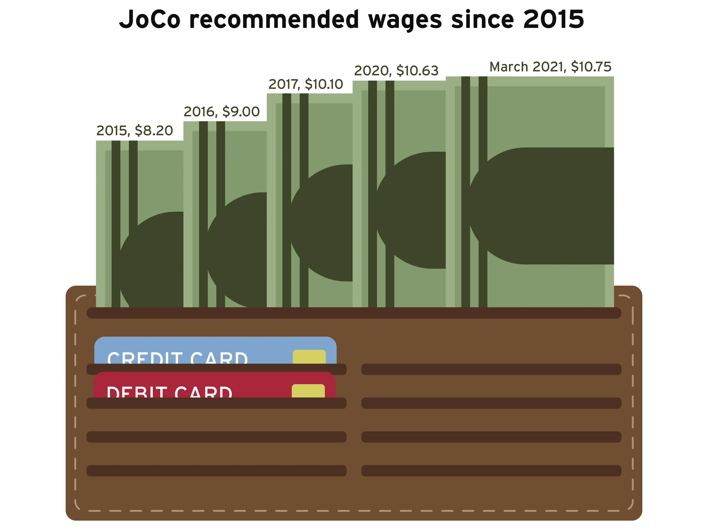

The Daily Iowan
![Front page of The Daily Iowan with a full-width above-the-fold photo of Andre Wright and Jason Sole. Both are wearing
white hoodies with black block text that reads, 'HUMANIZE MY HOODIE.' The photo background fades to white with Andre and
Jason standing on a pile of rubble, their heads slightly covering the 'Amplify' section nameplate at the top of the page.
The story title is below the photo, with the last word, 'Hoodie,' in green and all caps, overlapping the photo. The page includes
a secondary photo of Andre and Jason and a calendar of virtual community events on campus.](../images/gigs/the-di/2.webp)
![Front page of The Daily Iowan's Arts & Culture section, 80 Hours. A graphic takes up nearly the full page,
with the story starting below the graphic's torn bottom edge on the lower third of the page. The background is a dirt
road with a shadow of a figure cast in the upper left corner. Across the middle of the page is the silouhette of an ax,
in which an image of the Villisca Ax Murder House has been overlayed. The sign for the house is prominently displayed.
The title of the story and the '80 Hours' nameplate are set in a scratchy, pointy font.](../images/gigs/the-di/3.webp)
![Front page of The Daily Iowan with a full-width above-the-fold graphic on COVID vaccine rollout. The graphic is seperated
from the story with a red background ending in a diagonal slash through the middle of the page. A grey circle and thick, curved red
line on the red background radiate out from a microscopic image of the COVID-19 virus. Another thick red line in the shape of a half circle
seperates the image of the virus from an image of a bottle of the Moderna COVID-19 vaccine. The image of the vaccine is shaped like a circle
with a point coming off the bottom right corner, embedding it into the story text. The secondary story below the fold has the
Ethics & Politics banner and an image of Joni Ernst on a computer screen during a zoom call. To the left of the secondary story
is a half-rail detailing some of the inside stories with the DITV logo. To the right of the secondary story is a third story about
vaccines and increasing travel interest.](../images/gigs/the-di/1.webp) 




![Front page of The Daily Iowan with an above-the-fold graphic for a story titled 'Celebrating Black history.' The graphic is a digital collage
of Duke Slater, Carl Cain, Phillip Hubbard, and Elizabeth Catlett. Behind them are strips of paper in green, red, and yellow with bits of kente cloth. The graphic
appears to be taped down to the front page with yellow tape. The rail on the left has teases for the inside stories. The secondary story is about Iowa reacting to
immigration reform, and the third story is about a spike in cancelled housing contracts.](../images/gigs/the-di/6.webp)


I started at The Daily Iowan as a Designer in 2019. After a year I took over as Design Editor. The paper was named the Great Plains Journalism Awards Student Newspaper of the Year in 2020, and the Iowa Newspaper Association Newspaper of the Year two years running. I was the Great Plains Journalism Awards Student Designer of the Year in 2021 and 2022.